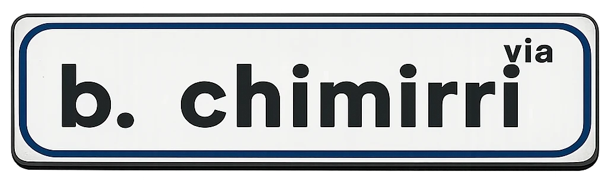

Il turno cambia tra
--
Mappa posti
Periodo corrente
Turno
Turnetto
Libero
Preferito
Tocca una card per aprire la mappa reale con il posto evidenziato.
Turno
Turnetto
Libero
Preferito
La mappa è interattiva: tocca un posto per vedere l’assegnatario.
Il turnetto cambia tra
--Condomini
Periodo corrente
Assegnazioni
Tutti gli assegnatari per posto
Download PDF
Periodo selezionato
Periodo attuale
Scarica il turno di oggi